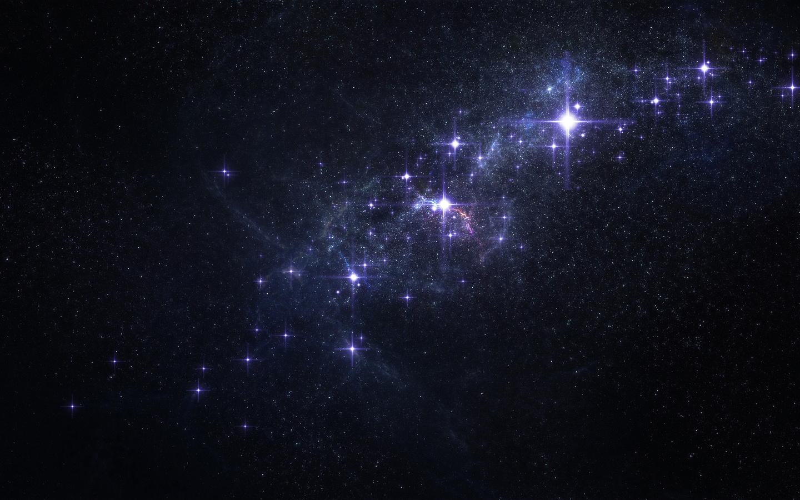
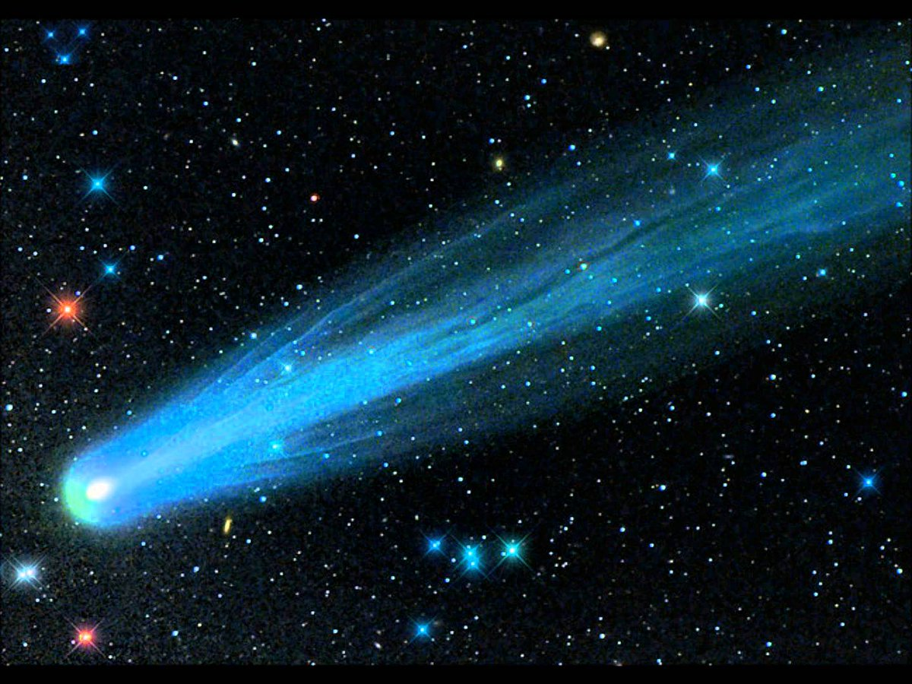
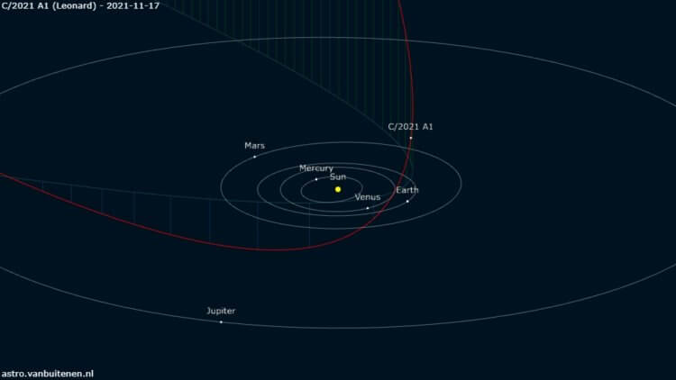
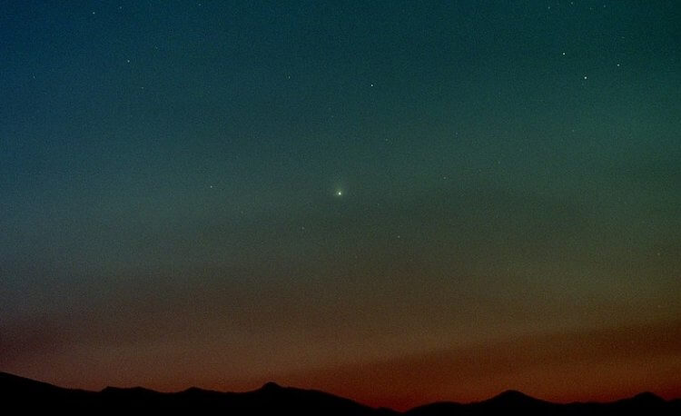
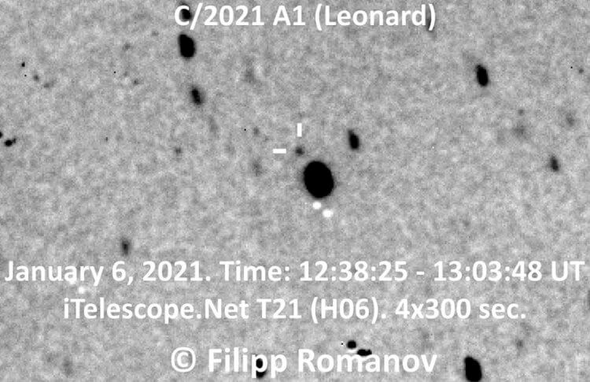
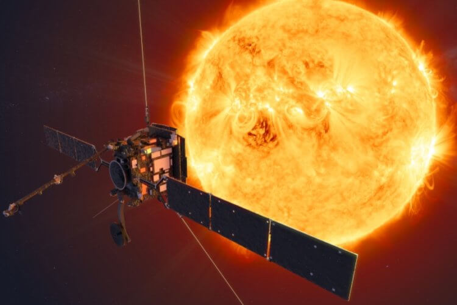
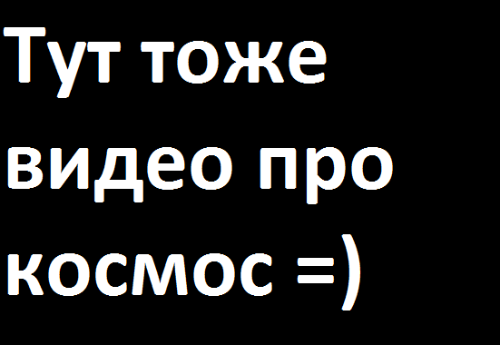
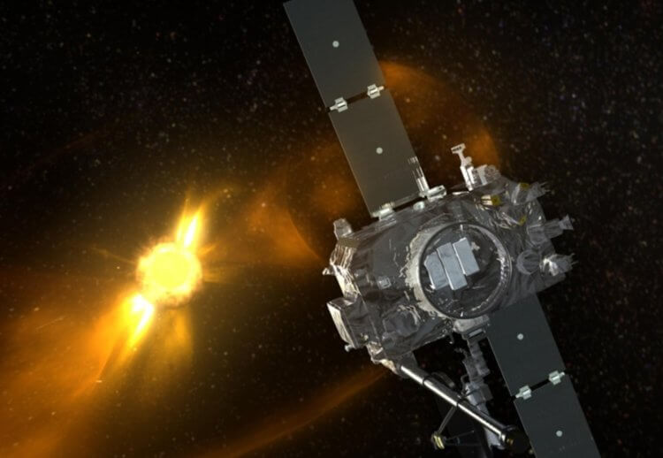

Над Землей пролетела самая яркая комета 2021 года
В январе 2021 года американский астроном Грегори Леонард (Gregory Leonard) стал первооткрывателем кометы C/2021 A1 (Leonard). Он заметил небесный объект на фотографиях, сделанных на 1,5-метровый телескоп Catalina Sky Survey, который расположен в американском штате Аризона. На момент открытия комета находилась в 750 миллионах километрах от Солнца. Находясь на таком расстоянии от самого горячего объекта в нашей системе планет, от начал оставлять после себя след из пыли, благодаря чему стал видимым для телескопов. В декабре уходящего года, в северном полушарии планеты, объект стал видимым невооруженным глазом. А в период между 12 и 13 декабря комета достигла максимального сближения с Землей и стала самой яркой за этот год. Нескольким телескопам удалось снять его на фото и видео, о чем мы сейчас и поговорим.
 Комета Леонарда на звездном небеВажно отметить: комета — это не то же самое, что астероид. Как правило, кометы представляют собой грязный кусок льда, который оставляет за собой хвост из газов и пыли. А астероиды — это крупные объекты, которые имеют сложный состав и представляют угрозу для Земли. Подробнее об отличиях между этими космическими объектами можно почитать на нашем сайте.
 КометаСодержание
Открытие кометы Леонарда
Первая открытая в 2021 году комета, как можно понять, названа в честь нашедшего его Грегори Леонарда. На момент открытия 3 января, этот небольшой космический объект располагался в созвездии Гончие Псы и представлял собой чрезвычайно тусклый объект небольшого размера. Он двигался в сторону Солнца и на протяжении всего года ученые наблюдали за тем, как он становится ярче.
 Орбита кометы ЛеонардаВ октябре исследователи обнаружили у него короткий, но очень плотный пылевой хвост. А ближе к середине декабря он приблизился к Земле на 34 миллиона километров — это максимальное расстояние для этого объекта. Более того, 14 декабря комета внезапно вспыхнула и ее яркость заметно увеличилось — ее можно было разглядеть невооруженным глазом, а еще лучше через бинокль.
 Комета Леонарда невооруженным взглядомВидео с кометой Леонарда
За движением кометы Леонарда наблюдали многие ученые при помощи разных научных приборов. Но наиболее хорошего результата достигли два спутника, которые предназначены для наблюдения за Солнцем. Первым исследовательским аппаратом является Solar Orbiter Heliospheric Imager (SoloHI), а вторым — разработанный аэрокосмическим агентством NASA спутник STEREO-A.
 Комета Леонарда 6 января 2021 годаВидео от спутника SoloHI
Аппарат SoloHI сделал несколько последовательных фотографий кометы в период с 17 по 19 декабря. Посмотрите видео ниже — интересующий нас космический объект является самой яркой точкой и пересекает кадр по диагонали. Также в поле зрения аппарата попал Млечный путь, он находится справа. В кадре есть Меркурий и Венера — они тоже находятся справа, в верхнем углу. Меркурий тусклый и медленный, а вот Венера очень яркая и быстро движется.
Комета Леонарда, снятая спутником SoloHIМожно заметить, что с каждым кадром хвост из газов и пыли становится все более заметным. Это связано с тем, что сначала поток был направлен в сторону спутника, а потом начал поворачивать в сторону.
 Спутник SoloHIВидео от спутника STEREO-A
Вторая анимация движения была сделана исследовательским аппаратом STEREO-A, который наблюдал за объектом с ноября. Представители NASA объяснили, что фото были сделаны путем вычитания текущего кадра из предыдущего — так они выделили различия между ними. Благодаря такому подходу исследователи смогли показать изменения, которые происходили в хвосте кометы.
 Комета Леонарда, снятая спутником STEREO-AРанее моя коллега Любовь Соковикова отметила , что комета Леонардо станет самым зрелищным событием 2021 года. И она была совершенно права, потому что эту комету мы больше никогда не увидим. Если она переживет свое путешествие вокруг Солнца, то будет выкинута из нашей планетной системы. А что с ней произойдет дальше — никто не знает.
 Спутник STEREO-AСсылки на интересные статьи, смешные мемы и много другой интересной информации можно найти на нашем телеграм-канале . Подпишитесь!